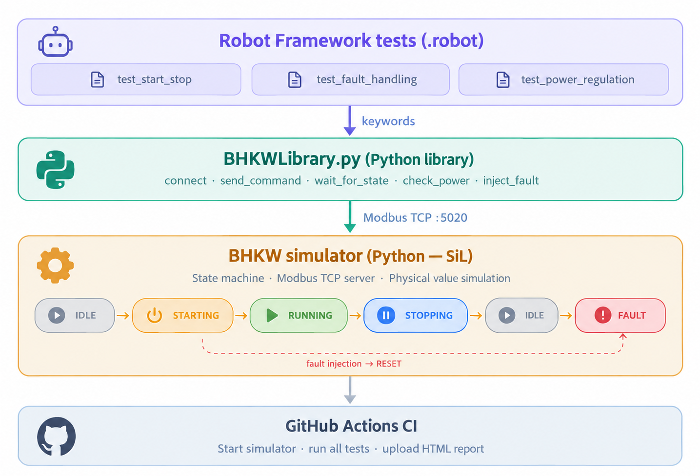
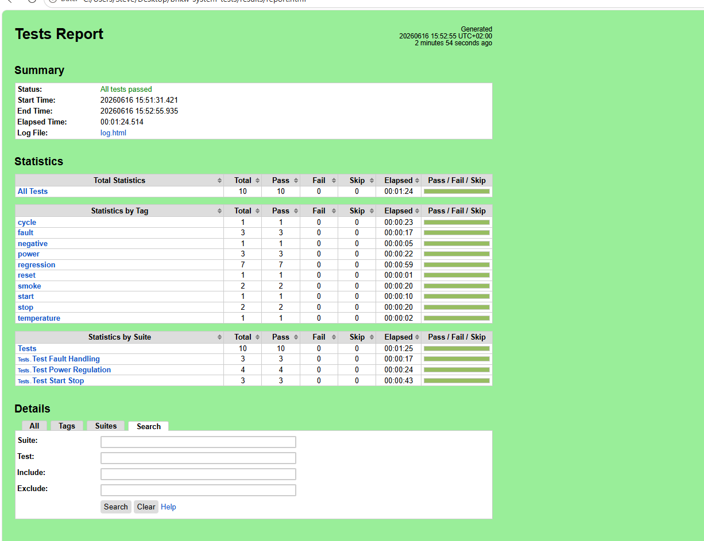
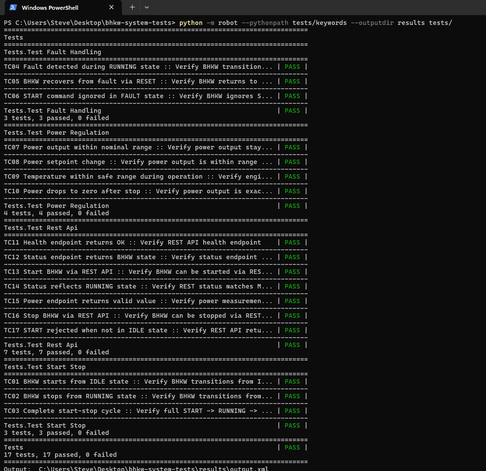
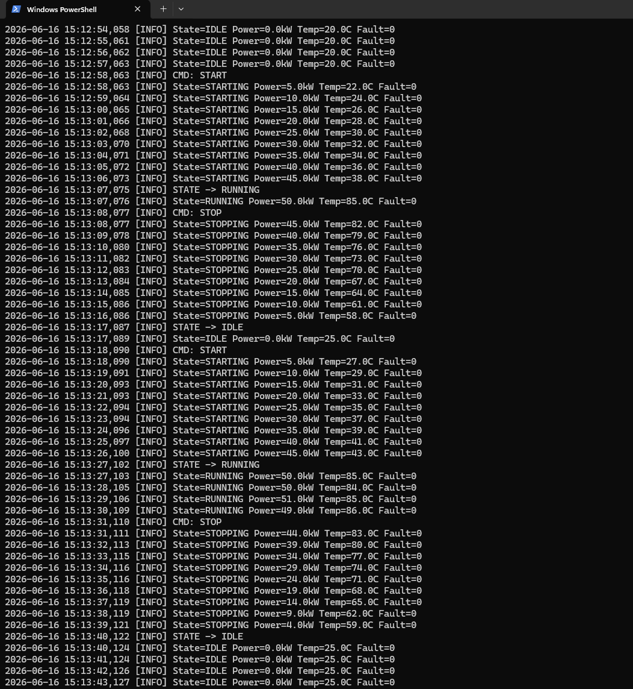
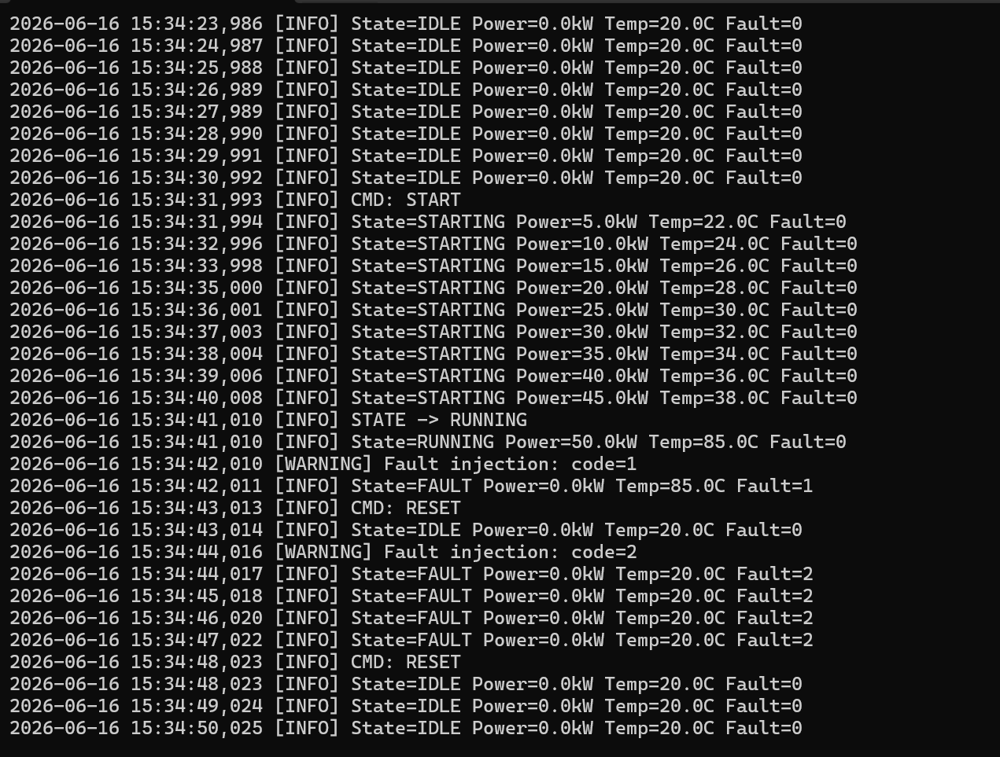

Motivation
In der Energietechnik müssen Anlagenregler vor jeder Freigabe sorgfältig geprüft werden. Anlauf- und Abschaltvorgänge, Fehlerbehandlung und Leistungssteuerung müssen einwandfrei arbeiten.
Ziel dieses Projekts war es, manuelle Tests schrittweise durch stabile, automatisierte Systemtests auf Basis des Robot Frameworks zu ersetzen und mit Modbus TCP als Kommunikationsschnittstelle, einer SiL-Umgebung als Ersatz für echte HiL-Hardware und vollständiger CI-Integration.
1- Architektur
Die Testumgebung besteht aus drei Schichten: Robot Framework Tests, Python BHKWLibrary und BHKW Simulator:

Modbus Register Map
| Register | Typ | Adresse | Beschreibung |
|---|---|---|---|
| Command | Holding | 0x0001 | 0=IDLE 1=START 2=STOP 3=RESET |
| Power Setpoint | Holding | 0x0002 | kW × 10 |
| State | Input | 0x0001 | 0=IDLE 1=STARTING 2=RUNNING 3=STOPPING 4=FAULT |
| Power Output | Input | 0x0002 | kW × 10 |
| Temperature | Input | 0x0003 | Celsius × 10 |
| Fault Code | Input | 0x0004 | 0=None 1=Overtemp 2=LowOil 3=GridFault |
| Fault Injection | Holding | 0x0003 | Nur für Tests: Fehlercode erzwingt FAULT |
| Runtime | Input | 0x0005 | Simulationsschritte im Zustand RUNNING |
2- Robot Framework Tests
Start/Stop Tests
*** Test Cases ***
TC01 BHKW starts from IDLE state
[Tags] start smoke
${state}= Read State
Should Be Equal ${state} IDLE
Send Command START
Wait For State RUNNING timeout=30
Check Power Output min_kw=40 max_kw=60
Check Temperature min_temp=75 max_temp=90
Check No Fault
Fault Handling Tests
*** Test Cases ***
TC04 Fault detected during RUNNING state
[Tags] fault regression
Send Command START
Wait For State RUNNING timeout=30
Inject Fault fault_code=1
Wait For State FAULT timeout=10
${fault}= Read Fault Code
Should Not Be Equal As Integers ${fault} 0
TC06 START command ignored in FAULT state
[Tags] fault negative
Inject Fault fault_code=2
Wait For State FAULT timeout=10
Send Command START
Sleep 3
${state}= Read State
Should Be Equal ${state} FAULT
3- Testergebnisse
Robot Framework Report

Alle Tests

BHKW Simulator : Start/Stop Sequenz

Fault Handling : Simulator

✅ All tests 17/17 Testfälle : Modbus TCP + REST API.
17
Tests gesamt
17
Tests bestanden
4
Test Suites
4- Test Suites
| Suite | Tests | Tags | Beschreibung | Status |
|---|---|---|---|---|
| test_start_stop | TC01–TC03 | smoke, regression | Start/Stopp Sequenzen und vollständiger Zyklus | ✅ 3/3 |
| test_fault_handling | TC04–TC06 | fault, regression | Störungsinjektion, Recovery und negative Tests | ✅ 3/3 |
| test_power_regulation | TC07–TC10 | power, temperature | Leistungsbereich, Temperaturüberwachung, Stopp | ✅ 4/4 |
| test_rest_api | TC11–TC17 | rest, smoke, regression, negative | REST API - Health, Status, Start, Stop, Power, 409 | ✅ 7/7 |
Tags-basierte Ausführung
# Nur Smoke Tests (schneller Sanity Check) python -m robot --include smoke --pythonpath tests/keywords tests/ # Alle Regression Tests python -m robot --include regression --pythonpath tests/keywords tests/ # Alle Tests python -m robot --pythonpath tests/keywords --outputdir results tests/
5- Zusammenfassung
| Komponente | Technologie | Status |
|---|---|---|
| Test Framework | Robot Framework 7.x | ✅ |
| Kommunikationsprotokoll | Modbus TCP (pymodbus) | ✅ |
| BHKW Simulator | Python — SiL Umgebung | ✅ |
| Python Library | BHKWLibrary.py | ✅ |
| Zustandsmaschine | IDLE/STARTING/RUNNING/STOPPING/FAULT | ✅ |
| Fault Injection | Modbus Register direkt | ✅ |
| CI/CD | GitHub Actions | ✅ |
| Test Report | Robot Framework HTML Report | ✅ |
| REST API | FastAPI, 7 Tests (inkl. Konsistenz REST/Modbus) | ✅ |
| Deployment | Docker, Kubernetes (lokal, Minikube) | ✅ |